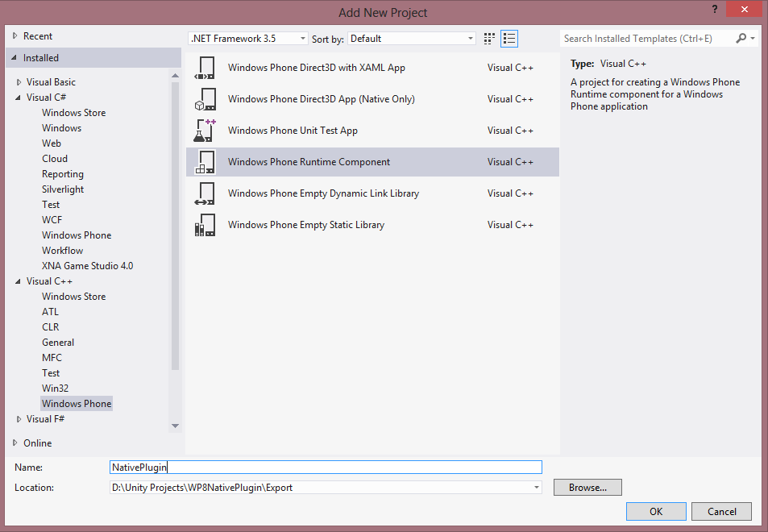
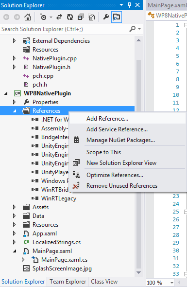
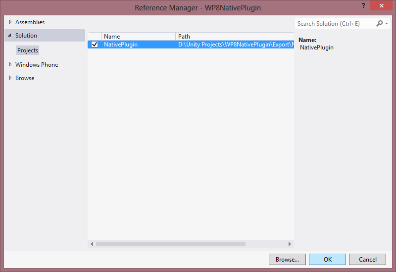
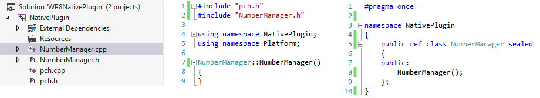
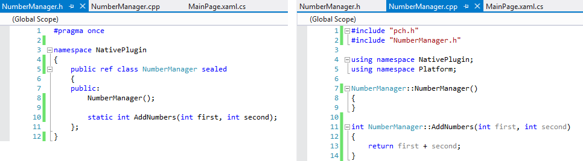
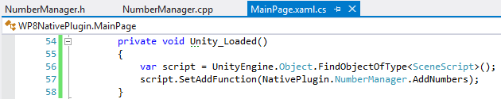
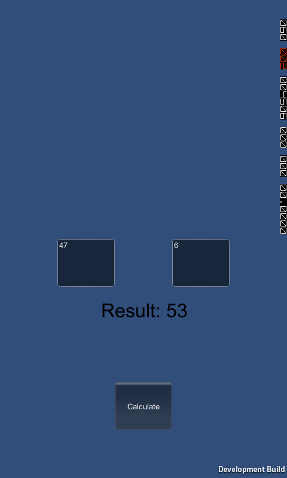

Windows Phone 8: C++ Plugins
In this guide we will create a Unity Plugin for Windows Phone using C++. The plugin itself will have one function: it will add two numbers together and return the result.
First, we will create a new Unity project and add this script to the camera:
using UnityEngine;
public class SceneScript : MonoBehaviour
{
private readonly Rect m_FirstTextAreaLocation = new Rect(Screen.width / 5, Screen.height / 2, Screen.width / 5, Screen.height / 10);
private readonly Rect m_SecondTextAreaLocation = new Rect(3 * Screen.width / 5, Screen.height / 2, Screen.width / 5, Screen.height / 10);
private readonly Rect m_CalculateButtonLocation = new Rect(2 * Screen.width / 5, 4 * Screen.height / 5, Screen.width / 5, Screen.height / 10);
private readonly Rect m_ResultLabelLocation = new Rect(2 * Screen.width / 5, 3 * Screen.height / 5, Screen.width / 5, Screen.height / 10);
private GUIStyle m_GuiStyle;
private string m_FirstNumber, m_SecondNumber;
private string m_Result;
public delegate int AddFunction(int first, int second);
private AddFunction addFunction;
void Start()
{
m_GuiStyle = new GUIStyle { alignment = TextAnchor.MiddleCenter, fontSize = 32 };
}
void OnGUI()
{
m_FirstNumber = GUI.TextArea(m_FirstTextAreaLocation, m_FirstNumber ?? "");
m_SecondNumber = GUI.TextArea(m_SecondTextAreaLocation, m_SecondNumber ?? "");
int first, second;
bool firstParsed = false,
secondParsed = false;
if (int.TryParse(m_FirstNumber, out first))
{
firstParsed = true;
}
if (int.TryParse(m_SecondNumber, out second))
{
secondParsed = true;
}
if (firstParsed && secondParsed)
{
if (GUI.Button(m_CalculateButtonLocation, "Calculate"))
{
if (addFunction != null)
{
m_Result = "Result: " + addFunction(first, second).ToString();
}
else
{
m_Result = "Add function wasn't set!";
}
}
}
GUI.Label(m_ResultLabelLocation, m_Result, m_GuiStyle);
}
public void SetAddFunction(AddFunction func)
{
addFunction = func;
}
}
The script draws two text areas on the screen, and if parsable numbers are filled into both of them, displays a button to calculate the result with an AddFunction. Our addFunction can be set with SetAddFunction method, which will be exposed to use in our generated Visual Studio solution. Don't forget to attach this script to the main camera in the scene. Export the project and open generated Visual Studio solution. In the generated solution, add a new project of type C++ -> Windows Phone -> Windows Phone Runtime Component:

Next, add a reference of our newly created plugin to your generated Visual Studio project:

It will be listed under Solution category:

Rename class from WindowsPhoneRuntimeComponent to NumberManager, to reflect the purpose of it:

Add a method to add two numbers in NumberManager class:

Finally, set the addFunction to our script in Unity_Loaded() method:

You're done! Run the project and observe the results:
